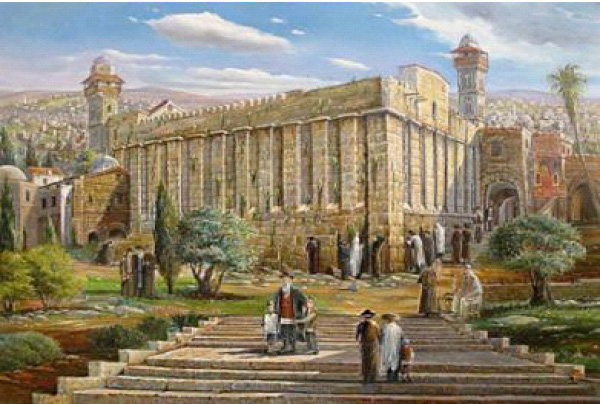

Blessings in the Balance
Immediately after the military powers of Israel conquered Jerusalem and Hebron, they already knew that there is an official paper from the time of the Turkish occupation in which documents unjustifiably and incorrectly state that the Temple Mount and Cave of Machpela belong to a gentile. This Arab did not make a purchase (for 400 silver shekels as did Abraham our Patriarch)! Regardless, they left the documents of ownership as they were.
Translated by Rabbi Binyomin Schlanger

THE SHOMRON
In the Talmudic tractate of Sota, the Mishna (Chapter 7, Mishna 5) states: “When the Jewish People crossed the Jordan River and arrived at Mount Grizim and Mount Eval in the Shomron, etc.” The Mishna continues to describe the epic event whereby six of the legions of Israel ascended Mount Grizim and the other six legions ascended the facing Mount Eval. Together with the Holy Ark, the Priests and Levites who remained in the valley between then turned towards Mount Grizim and uttered great blessings, to which the entire Jewish People responded Amen. The story goes on with more detail.
Thereby the Mishna lays down the ruling that both Mount Grizim and Mount Eval are connected with the Shomron. Now since this a clear Mishnaic decision, we have a principle that when “one (a judge) who makes a mistaken ruling on a theme brought in a Mishna, the ruling is to be annulled, (and the case must be retried)” since on such an explicit law a mistake is unacceptable.
On this basis it clearly understood that there remains no room to dispute the fact that the Shomron is part of the Land of Israel, and cannot be relinquished: not to Arabs, Americans, nor to any of the seventy nations, since this is within the exclusive ownership of the Jewish People!
And even more: The very blessings of the Land of Israel are dependent upon the mountains of Grizim and Eval. It is not a mere coincidence that G-d gave His blessings on a mountain merely because this was a lofty spot. Rather, it is a matter of absolute certainty there is an inner connection between G-d’s blessings to the entire Land emanating specifically from Mount Grizim.
Because of this the Mishna states its ruling: “Mount Grizim and Mount Eval are in the Shomron.” From here it is evident that Mount Grizim and Mount Eval are the source of blessing for the entire Land of Israel. Further: the Mishna states that these were in the Shomron. Thus it is clear that the Shomron hold the balance of the entire Land of Israel.
(From a public address Shabbos R’ei, 1977)
TEMPLE MOUNT & CAVE OF MACHPELA REGISTERED IN NAME OF GENTILES
We find ourselves now at the time of the end of the Exile. We hear the footsteps of Moshiach. From time to time there are occurrences which remind us of this. These events are not accidental; rather they are directed by Divine Providence to awaken the Jewish People to be purer, to be greater, and not G-d forbid to the contrary.
Very recently several new occurrences took place, upon which each of us can contemplate and find many pointers from which to learn. I will consider two points which are relevant both generally and specifically. The teaching of the Baal Shem Tov is well known: Whatever a Jew sees or hears has within it a message in his service to his Creator. Certainly this is true when he sees an event of a more general nature that is not just relevant to him alone or to a small number of Jewish people, but to a great number. Then certainly this is a wider message. Not always does one expose all happenings that take place, because this may well cause pain to Jewish people. We see, however, that a matter of shocking proportions has turned sour. And the situation remains status quo even though there are those in the government who make out as if they know nothing.
Until this very day it remains registered in official documents that the legal owner of the old city of Jerusalem, over the Temple Mount, is a gentile. (These places remain sacred since we have a ruling that the holiness of a given location is preserved into the future and can never become nullified, as Maimonides writes that the Sh’china does not become null; this remains the Halachic ruling.) They know who this is and offer tacit agreement until this very day. No one wishes to get involved. Rather, they silence the entire matter. The same remains true of the Cave of Machpela and its surrounding area. Official documents record that these belong to a Gentile! This runs contrary [not just to love of Israel], but to the love of justice and honesty!
Simply said, this is just as they took over many locations for security reasons and paid for them in a manner of pleasantness and peace. Similarly they could have done this regarding the place of our Temple and the Cave of Machpela. Regardless, this status quo remains until this very day. The agents of whom we spoke, who are responsible for this matter, make out as if they know of nothing. This is in spite of the fact that the matter is public knowledge.
Elijah the Prophet called out at Mount Carmel to the Jews who served idols: “How long will you continue to waver between two opinions?” If you wish to choose a specific path – make the choice! “If the Master is G-d – go after Him,” but don’t waver between two views. In one respect this is much worse than idol worship.
The main point is that in this instance they are not even wavering between two views. Immediately after the military powers of Israel conquered Jerusalem and Hebron, they already knew that there is an official paper from the time of the Turkish occupation in which documents unjustifiably and incorrectly state that the Temple Mount and Cave of Machpela belong to a gentile. This Arab did not make a purchase (for 400 silver shekels as did Abraham our Patriarch)! Regardless, they left the documents of ownership as they were.
(From a public address, 13 Tishrei 1977)
Dear Reader,
Please take a few moments each week to copy, paste, and email this sicha to 10 friends, asking your friends in turn to email the same to 10 further friends, ad infinitum. Thereby you will be taking a strong and active part in the Rebbe’s battle to protect the lives of millions of Jewish people whose lives are so endangered. This is, as the Rambam writes, Milchemes Hashem, and we will see it through to the final Nitzachon!
Please go to http://beismoshiachmagazine.org/true-peace/ where you will find the current sicha.
The Rebbe. "Blessings in the Balance." Beis Moshiach, no. 876 (April 17, 2013).